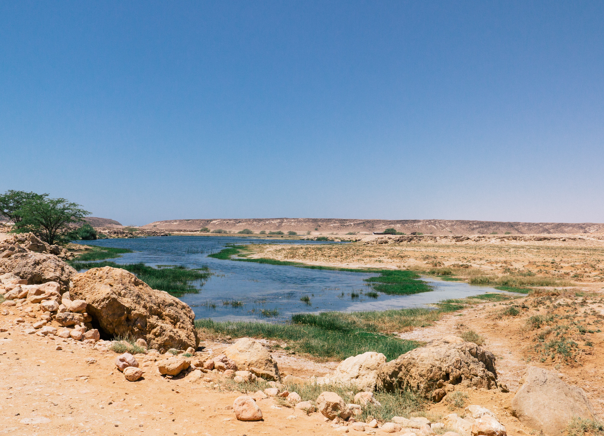
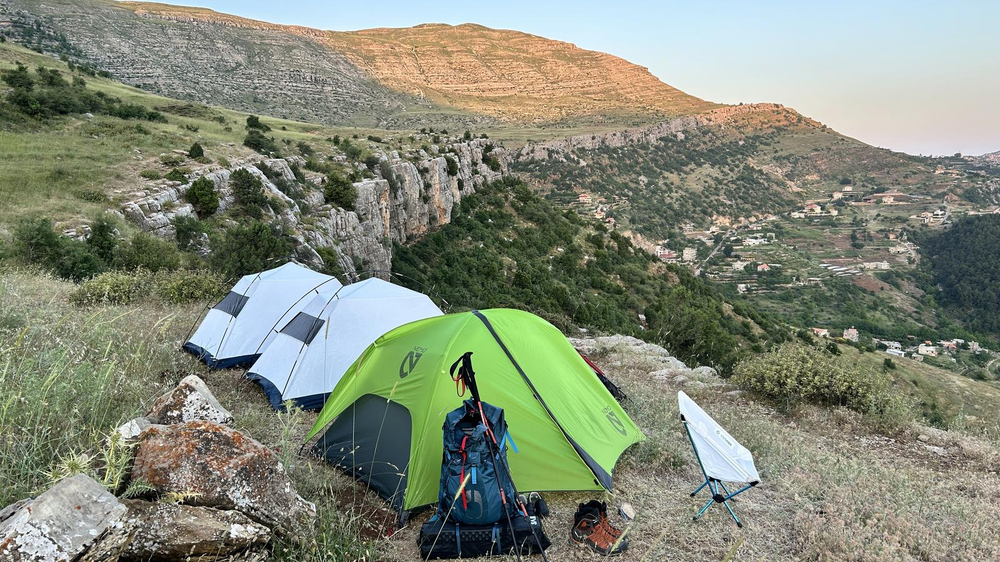

عُمان تنظّم زيارة محمياتها والتخييم فيها
ستة قرارات تنظّم دخول الزوار والتخييم والمبيت وتحمي الحياة الفطرية

ستة قرارات تنظّم دخول الزوار والتخييم والمبيت وتحمي الحياة الفطرية

دراسة علمية مرتقبة لتعزيز إدارة المحمية وصون موائلها في مطروح، امتدادًا لتعاون شمل إعادة توطين الحبارى الأفريقية عام 2022.

إطلاق 76 سلحفاة في مياه السعديات يرافق الإعلان عن الشبكة.

أسبوع افتتاح يُقام للمرة الأولى حتى 18 أكتوبر، ومعسكر للصغار وسط ست مناطق تضم أكثر من ثلاثة آلاف حيوان.

زارت وزيرة البيئة الدكتورة تمارا الزين مركز الجمعية اللبنانية للطيور المهاجرة في جرجور، قضاء زغرتا، واطّلعت على جهود إنقاذ الطيور المصابة والعناية بها وتأهيلها لإعادتها إلى الطبيعة. وشملت الزيارة إطلاق عدد من الطيور التي عولجت وتأهّلت، في محمية حرش إهدن، بمناسبة اليوم العالمي للطيور المهاجرة.

مع انطلاق موسم الطوقي 2026–2027، تعود محمية الملك عبدالعزيز الملكية إلى الواجهة بعد توثيق تسعة أنواع من الطيور للمرة الأولى داخل نطاقها.

المحميات البرية تغطي نحو ربع مساحة البلاد، وبرامج لحماية المها العربي وغزال الرمال والنعام.



سليم مجاعص رئيس نادي Xtreme Dive Center Lebanon - XDC مدرّب وخبيرعاشق للبحر والمغامرة، يعيش مزاجه فوق الماء بالفرح والضحك وتحت الماء بالجدية المناسبة والمسؤولية القانونية للتمتع ب…